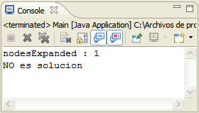

| Garrafas |
Disponemos de un tablero con 3
fichas negras (N), 3 fichas blancas (B) y una casilla vacía, en la
siguiente posición inicial:
El objetivo del juego consiste en conseguir que todas las fichas blancas se sitúen a la izquierda de las fichas negras, sin importar la posición de la casilla vacía, ya sea en el centro o en cualquiera de los extremos, por lo que entre menor sea el numero de fichas blancas a la derecha de la/s ficha/s negra/s menor debe ser el valor heurístico otorgado a ese estado. h'(x) = Numero de fichas Blancas a la derecha de una ficha Negra
Todos los operadores se aplican entre una casilla indicada por el propio operador, que contiene una ficha Blanca o Negra y la casilla vacía.
Algoritmo HillClimbingSearch o Escalada Simple: Técnica de búsqueda local más básica. En cada paso, el nodo actual se intenta sustituir por el primer vecino con un valor más alto que el nodo actual o el primer sucesor con una medida heurística mas baja que el nodo actual. Termina cuando encuentra la solución o no puede seguir. Técnica muy dependiente del orden de generación de los hijos.  En la expansión del primer nodo, todos sus hijos
poseen la misma medida heurística ya que es imposible realizar un
intercambio entre fichas Blancas y fichas Negras directamente.
|